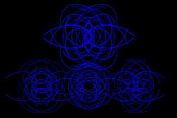

past performance |
|||
| 
TIGUE X Randy Gibson: Resonating Apparitions Part of Avant Media’s 2017 Tangents showtimes & tickets:April 11 @ 8PM TIGUE performs the World Premiere of a new work for percussion, harmonic resonators, and projection by time-artist Randy Gibson. This immersive performance in harmonic time, The Four Pillars Appearing from The Resonating Discs invoking The 72:81:88 Confluence in a setting of Quadrilateral Starfield Symmetry ATS4 Base 6:81 explores new methodologies in Randy Gibson’s ongoing work to expand and reconstruct the perception of the passage of time. Performed by TIGUE on nine metallic instruments discretely amplified to highlight the resonance of The Four Pillars from within the rich overtone cloud, the work asks performer and audience alike to consider their own perception of time and change. The Four Pillars Appearing from The Resonating Discs… was commissioned by Avant Media for the 2017 Tangents series. Due to the fragile perceptual nature of this work, late entry cannot be guaranteed. Image: Randy Gibson’s Quadrilateral Starfield Symmetry ATS4 Base 6:81 - Dual Projections and Dichroic Glass Filters - 162 Minutes (2017) - Render Still |
upcoming performances |
|||
 |
|||
| EVQ Film Festival 2018 August 20-25 |
|||
performance archives |
|||
| 2018 | 2017 | 2016 | 2015 |
| 2014 | 2013 | 2012 | 2011 |
| 2010 | 2009 | 2008 | 2007 |